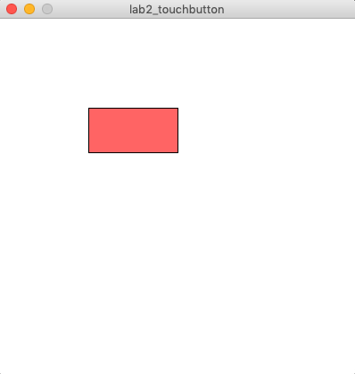
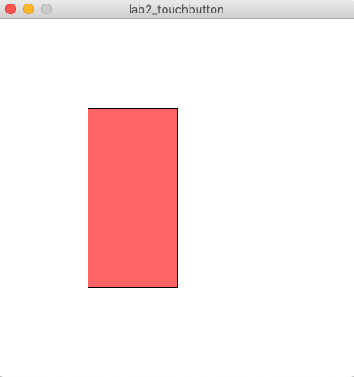
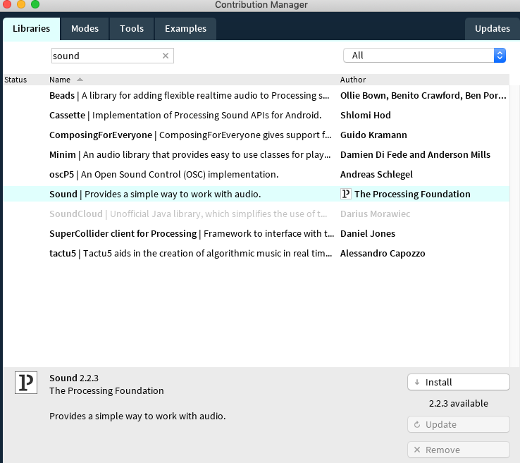
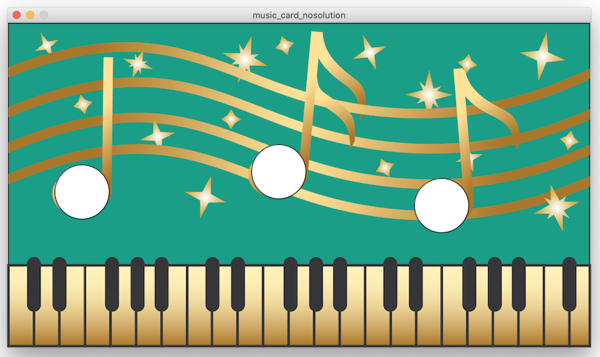

6.810 Engineering Interactive Technologies (fall 2021)
Part 2: Connecting Micro-controller to UI
Serial Communication to Send Touch Signals to Processing
It then communicates the sensor signals in the format we defined back to our laptop using Serial communication through the USB cable.
So far, we have only used the Arduino IDE to 'listen' to the Serial communication from the USB cable and to show the values in the Serial Monitor or the Serial Plotter.
However, since any software can listen to the Serial Communication, we can also write programs in other programming languages and IDEs to read and do something with the sensor signals.
In the next lab, we are going to write a program in Processing.
Processing is a programming environment that makes it very easy to built on-screen UIs.
For our purposes, we will build a digital version of our music card that will highlight the corresponding areas on the card when you push the button on the physical card and will also play the corresponding song.
Your Task for Today
In the last lab, we have already done steps 1-4 to get our interactive music card going.
(last lab) (1) Circuit Design: You drew the circuit design of your card by creating a 2D drawing of the wires and interactive touch and slider areas.
(last lab) (2) Conductive Silver Inkjet Printing: You printed your design with conductive inkjet printing.
(last lab) (3) Wiring up the Buttons: You wired up your touch buttons using a breadboard and an ESP32 microcontroller.
(last lab) (4) Sensing the Touch Signals: You sensed the touch signals using capacitive touch sensing (through Arduino's CapacitiveSensor Library) and applied filtering to the signals.
Today, we are going to connect your card to Processing: When you push the physical touch button it will light up the corresponding digital touch button in Processing and the associated song will play. We will also extend the circuit and signal processing to include the touch slider for the music volume, which we haven't wired up yet.
(5) Visualizing User Input: Next, you will setup the touch buttons in a programming environment called Processing, which will visualize when physical input on the touch buttons on screen and also play the corresponding songs.
(6) Wiring up and Visualizing the Slider: Finally, you will add the slider to your circuit and user interface and use it to control the music volume.
Deliverables Lab 3 (due Friday, Sept. 11, 2020, 11.59pm)
At the end of Lab 3, upload to your student google drive:
- the Processing code (.pde) you wrote for Serial communication that displays the three touch bars and the slider bar
- the Processing code (.pde) of the completed music card application
- the Arduino code you wrote for Serial Communication (.ino file format) with the slider added
- a short video (.mov or .mp4, max. 1 minute) showing how you use each function of the printed music card, i.e. touch the buttons with your finger to play/pause a song, go to the previous/next song, and adjust the volume
Make sure everything from last lab is still working
Before getting started with the new content, let's first make sure everything from last time is still working and no wires came lose.
To do this, connect your music card and ESP32 again to your computer via USB and upload the Arduino program that you haven written in the last lab.
Double check that everything is still working, i.e. when touching one of the touch buttons you should see the touch signals show on the Serial monitor.
(5) Visualizing User Input with Processing
Receiving Touch Input in Processing:
Create Processing Script that Listens to Serial Communication
In the last lab, we sent the touch input to the Arduino IDE and plotted it in the Serial Monitor or Serial Plotter.
Since Arduino has no libraries for graphical user interfaces, we now want to instead send our touch input to Processing.
Processing is a user interface protoyping platform that is based on Java. It was created by MIT students (and others) in their spare time starting in Spring 2001 and is nowadays used by thousands of makers and UI designers. You can find useful information on how to use it in their tutorial section.
In the last lab, we encoded a touch event in the format:
(sensor ID),(is_touched)(newline)
(sensor ID) is either 0, 1 or 2 and represents the ID of the observed touch sensor.
(is_touched) is either 0 or 1 (0 if the sensor is not touched, and 1 if it is touched).
And wrote it to the Serial port using Serial.print().
The resulting messages looked like this:
If sensor 0 gets touched, this message is printed once:
0,1;
Then when the user lifts the finger again, this message is printed once:
0,0;
To use this information in Processing for our graphical user interface, we need to write a Processing script that listens to the Serial communication.
To do this, open Processing, create a new program, and import the Serial library.
import processing.serial.*;
Next, you need to create a new port that can be used for communication by creating an object from this class:
Serial myPort;
To create the port, you need to define three things: (1) you need to tell the port which application will listen to it (i.e. 'this' one), (2) you need to tell the port its portname (same as you used in Arduino), and (3) you need to tell the port at which baudrate it should listen to be able to decode the messages (same as you used in Arduino).
myPort = new Serial(this, portName, baudrate);
For the portName, you can get a list of all available ports from the Serial library (see below).
By accessing different buckets of the list, you can get access to the name of each port.
The correct port is the one you also used in your Arduino program, i.e. this is where the microcontroller is connected to your laptop.
Check if the correct portname is in bucket 0, 1, or 2 by printing it.
// check which port you use: 0, 1, 2?
String portName = Serial.list()[2];
print(portName);
For the baudrate, you also already know this from your Arduino program that you uploaded to the microcontroller.
Check in your Arduino program with which baudrate you initialized the Serial communication.
If you use a different baudrate than you wrote into the Arduino program, you will only get a lot of random stuff back since your Processing application will not know how to 'translate' the messages that are coming from the microcontroller since it would 'speak' at a different frequency than the Processing application would 'listen'.
Now that your port is defined, we are ready to listen to it and check if data is available, but before we do this let's briefly look at the Processing program structure.
Processing Program Structure: setup() and draw() functions
Similar to Arduino, every Processing program has two functions: one that is run only once (setup()) and one that is looping forever (draw()).
Before we move to the next step, let's create a setup function:
void setup() { // runs only once
}
Move the port constructor code into the setup() funtion since we only need to construct the port once.
Next, create an empty draw function:
void draw() { //runs infinitely
}
We are going to fill this in the next step with the code that will continously listen to the port and see if any new messages are there from the microcontroller.
Reading Data from the Serial Port
Now that we have the port defined, we can see if data is available and if the answer is yes, we can read the data from the port.
In the draw function, add the following lines:
// If there is a message with at least 4 characters
// remember we are sending in the format: sensorNumber comma touched semicolon with one character each
if (myPort.available() >= 4) {
// read a String until the character ';' is found, which indicates the end of our message
String val = myPort.readStringUntil(';');
}
Note that we use myPort.readStringUntil(), which we can do because we are sending a string on the serial port from our Arduino program that is looping on the microcontroller. If we send other data-types, we would have to use a different function so Processing knows how to convert the un-typed data that is coming through the port at the specific baudrate.
Next, check if this is working. We recommend you print() the String value to the Processing command line, run your Processing program, and touch your touch sensor to see if the statements you printed to Serial port (via Arduino IDE) gets printed on the Processing command line. If you are getting a ‘port busy’ error, make sure you close the Serial Monitor / Plotter on Arduino IDE.
If that doesn't work, now would be a good moment to get some help.
Creating a Visualization for the Incoming Touch Sensor Data
Now we can do something based on the incoming Strings.
In the next step, we want to create a bar that goes up if the touch sensor is touched and down if the sensor is not touched.
Let's start with a single bar for touch sensor 1 and we can do the rest later.


Let's first create the bar with a fixed width of 100px and a fixed height of 300px.
Here are some useful references:
For setting the size of your application window:
For drawing the rectangle:
For coloring the bar and the background:
Once you are done it should look like this:
Next, we can connect the height of the bar to the incoming touch sensor data coming from the serial messages in our Processing Script.
But before we can do this, we first have to do some String Processing on the incoming message since the message is still a single string in the format of e.g., 0,1;
Therefore, we need to split up the message.
Splitting the Incoming Message String into Individual Values
What we are currently printing to the command line are String in the format of "0,1;" (sensor_ID,is_touched;).
However, to analyze this data in our code we have to split it again into two individual values so we can check the sensor_ID and and if the sensor is touched or not with an if/else statement.
Use the String split() function to do that.
You can find information on split() and how to use it in the Java String reference.
Once you have both the sensor_ID and is_touched separated, we recommend you check that this worked by printing them to the command line before moving on.
Connecting the Incoming Touch Signals to the Visualization
Next, we will connect the height of the bar to the incoming touch signal.
A high bar shows that the sensor is being touched.
A low bar shows that the sensor is not being touched.
Tips
- If you plan to use a boolean in Processing, the datatype is spelled out
boolean myVariable; not bool like in Arduino.
- If you do a String comparison, remember you cannot use
stringVariable == "StringValue", instead you need to use equals(), check the reference here equals()
- Don't forget to clear the background at the beginning of the draw() function. Otherwise, you are just drawing each update on top of the previous update, so you may actually not see the bar changing since a shorter bar overlaid over a longer bar is not visible. Use
background(255,255,255); or any other color you like.
Once you are done, it should look like this:
Extend Visualization to Three Bars
Next, we want to extend our user interface to have a bar for all three touch sensors.
It should look like the image below.
Only touch button 1 is touched, touch button 2 and 3 are not touched.
Touching multiple touch sensors simultaenously also works.
This should be a bit surprising to you, since we can only read one message at a time in the draw() function.
The reason it still works is that we are reading messages at such a high speed that the processing gap is not visible to the human eye.
Only touch button 1 and 2 are touched, touch button 3 is not touched.
Prepare for playing music: Install Processing 3 Sound Library
Now that we have basic touch input working in Processing, we can connect it to our music play application.
To install the Processing Sound Library, go to Sketch -> Import Library -> Add Library.
Then in the 'Libraries' Tab, search for 'sound' and install the one that is officially from Processing (see image below).

Run Skeleton Code
Once you have the library installed, download the skeleton code we provide for you from here.
Inside the folder, open and run the music_card_nosolution.pde, it will take a little while to load until you see the music card image in the view because we also load the mp3 audio files for the songs, which takes some time.
You should see the music card being loaded into your application as shown below. If you don't see it, please let us know.

Add Touch Buttons onto the Card
Next, we want to mark the three notes as digital touch buttons.
We will use the:
- left touch button for previous song
- middle touch button for play/pause
- right touch button for next song
To make this easier for you, we already implemented a class 'Buttons' for you.
You can make a new button with:
myButtons.add(new Button(x_top_left, y_top_left, x_bottom_right, y_bottom_right, drawing-mode));
Please add your buttons to line 49 onwards.
One of the buttons is already defined there:
myButtons.add(new Button(360, 180, 440, 260, "Ellipse")); //line 49
Your final result should look like this:

Create Touch Events for Playing / Pausing the Music and Next/Previous Song
To create events on mouse click, we need to implement several mousePressed() events.
We already did this for you in the code further down in the class.

We first iterate over all the buttons you created and then depending on the button ID, we want to execute a music function.
We created a music class that loads several example songs in your project folder and has the functions:
music.play();
music.pause();
music.back();
music.forward();
You can see in the switch/case code that we already assigned the middle button to play and pause music.
Extend the code to also go to the next and previous songs.
Click onto the virtual touch buttons, i.e. onto each note, to see if your code works.
Hide the Touch Buttons
While we want to have a touch button on each note, we don't want to see the white ellipses since they make the card look less good.
We already prepared a piece of code for this for you:
Press the 'h' key on your keyboard while your program runs.
It will hide the buttons but you can still click on them.
If you want to see them again, press 's' (for show).
Study the code to see where this was implemented and how we did it.
Now let's play some music from the Inkjet Printed Physical Card
Now that we have the user interface that we can control digitally and we tested that everything works by clicking onto each note to play/pause and go to previous/next song, we also want to play some music from the physical card.
You already implemented the Serial communication and the message decoding in the previous exercise, i.e. the Processing application you wrote for displaying the touch bars that go up and down.
Add this code to the music card UI and instead of increasing the height of your bar you are now calling the music functions.
Once you have finished the code, try if it works by touching the notes of your printed music card to play/pause the song and go to the next/previous song.
Deliverables Lab 2 (due Friday, Sept. 11, 2020, 11.59pm)
At the end of Lab 3, upload to your student google drive:
- the Processing code (.pde) you wrote for Serial communication that displays the three touch bars and the slider bar
- the Processing code (.pde) of the completed music card application
Create Processing Script that Listens to Serial Communication
0,1;0,0;0,1;boolean myVariable; not bool like in Arduino.stringVariable == "StringValue", instead you need to use equals(), check the reference here equals()background(255,255,255); or any other color you like.